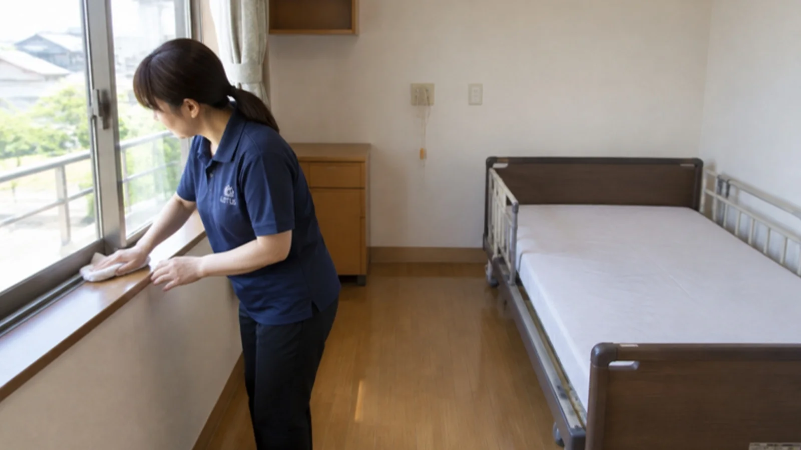
床・建具・窓
床の洗浄とワックス、扉・手すり・スイッチまわりの手あか、窓とサッシまで。
介護・福祉施設の居室清掃
空いた居室の清掃、人手が足りず後回しになっていませんか。写真を送るだけで、無料でお見積りします。
居室清掃(20㎡以下)20,000円(税別)
 東京都・神奈川県居室 1 部屋から
東京都・神奈川県居室 1 部屋から私たちの約束
介護施設は、体力の落ちた方が一日を過ごし、その方々を支える職員さんが毎日働く場所です。床、手すり、トイレ、空気。毎日触れる場所を整えることは、暮らす人と、ケアする人の両方を守ることにつながる。私たちは、そう信じて掃除をしています。国の手引きが最初に求めるのも、まず汚れを取り除くこと。その基本を、生活の時間を止めずに、毎回やり抜きます。
代表の現場経験
代表は清掃業界大手で社員として現場に立ち、その後は外部顧問として、仕組みの側から現場を見てきました。数多くの現場に携わらせていただいた経験を、介護・福祉施設の清掃の手順と報告の仕方に込めています。
代表の経歴を読む ›台数の多い現場や広い施設にも、協力会社と連携して対応します。
件数は、代表が前職の清掃会社で社員・外部顧問として携わった現場を含みます。
退去が出たら、写真を送るだけ無料お見積り。居室 1 部屋から承ります。
無料で見積りを頼む ›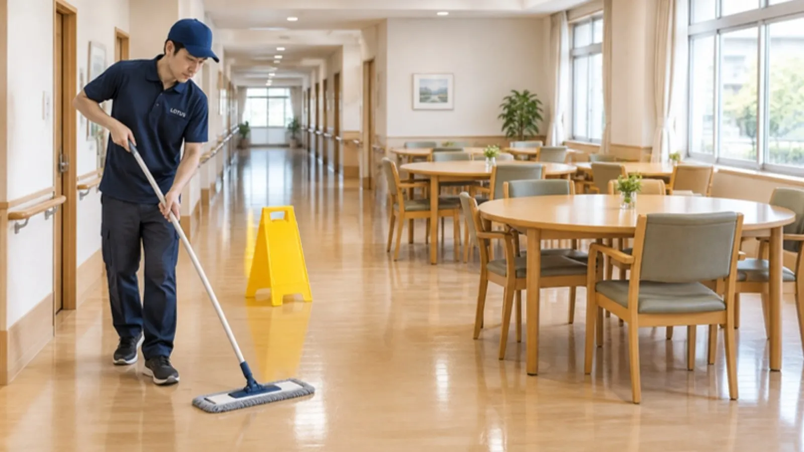
共用部パック食堂・廊下・トイレの床を、まとめて
約 40 坪2 名 × 4 時間の目安
約78,000円(税込・目安)
食事・入浴の時間を外して作業
共用部パックを見る ›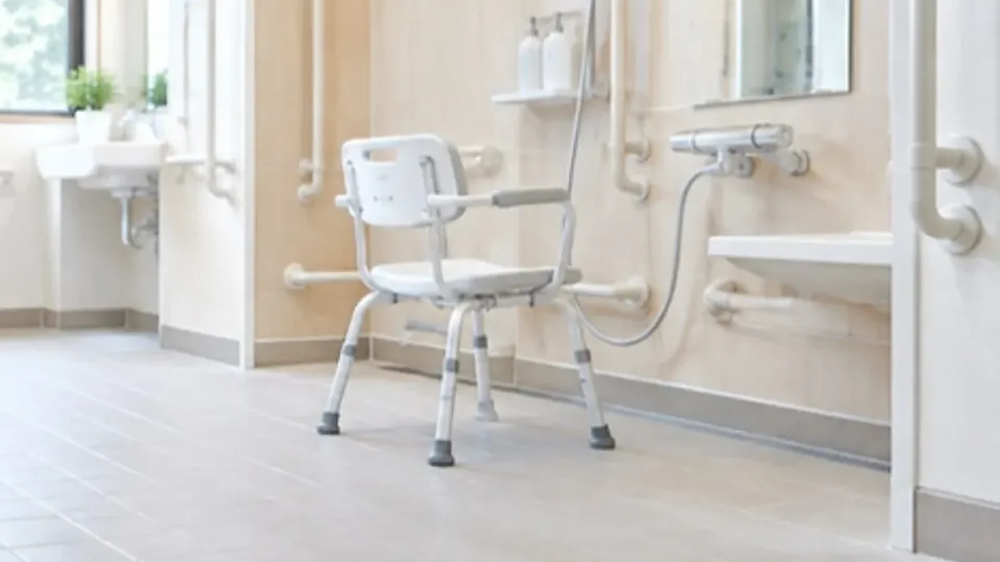
浴室・トイレ付きの居室も水まわりまで、次の入居に備えて
居室清掃21㎡以上
30,000円〜(税別・〜40,000 円)
浴室・トイレ付きは別途ご相談
料金の目安を見る ›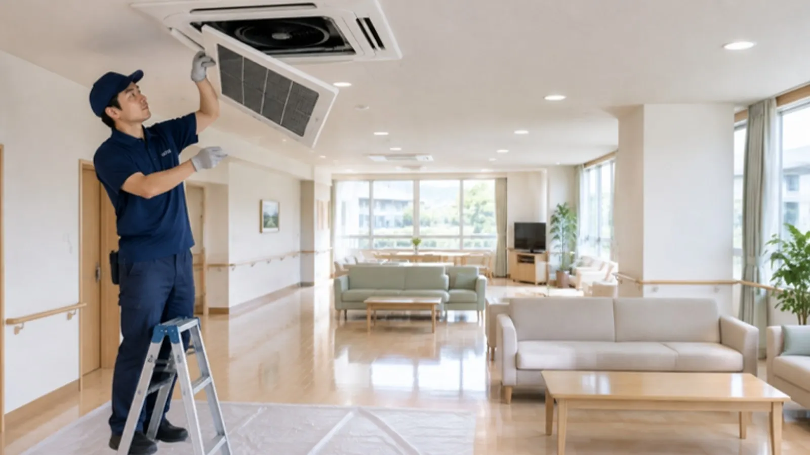
空調談話室・食堂の天井エアコンを分解洗浄
業務用エアコン複数台はまとめ割
35,000円/台(税別)
お食事の時間を外して作業
エアコン洗浄を見る ›施設の困りごとは、調査にも出ています
公的な調査や手引きに書かれている、施設運営の「よくある負担」と、私たちが引き受けられることを並べました。
有料老人ホーム・サ高住の平均入居率は 88.5〜91.0%。10 部屋に約 1 部屋が空いている計算です。退去後の居室を早く整えるほど、次の入居の準備が早く進みます。
居室清掃 1 部屋 20,000 円〜 ›出典:PwC コンサルティング「高齢者向け住まいにおける運営形態の多様化に関する実態調査研究事業 報告書」(令和 7 年 3 月・厚生労働省 老人保健健康増進等事業)老人ホーム探しのガイドでは、見学時のチェック項目として「においの有無」「清掃が行き届いているか」が挙げられています。人手が足りないと掃除が後回しになりやすい、とも。
見学前の共用部パック ›出典:LIFULL 介護「老人ホームの見学」国のガイドラインでは、施設の清掃は「利用者の身体に接することのない周辺業務」の例とされ、介護職員との役割分担がすすめられています。職員さんの時間を、入居者さんとの時間へ。
定番の頼み方を見る ›出典:厚生労働省「介護サービス事業における生産性向上に資するガイドライン」(全国老人保健施設協会の資料より)厚生労働省の「介護現場のニーズリスト」には、入浴後の壁・天井・浴槽の洗浄に「多大な時間と労力を要している」という声が載っています。
浴室を含むメニューを見る ›出典:厚生労働省「介護現場のニーズリスト 浴室清掃における安全性・負担軽減」こんなとき、ご相談ください
介護施設・福祉施設の方からよくうかがうお悩みです。当てはまるものから、どうぞ。
居室清掃を 1 部屋から。床・建具・窓・水まわりまで整えて、次の方を迎えます。
居室清掃を見る →拭き上げと水まわりの清掃に、消臭・抗菌の光触媒コーティングを組み合わせられます。
メニューを見る →古いワックスを剥離して塗り直し。乾くまでの時間と、通行を再開する時間を先に決めます。
メニューを見る →天井のエアコンを分解して高圧洗浄。入居者さんの不在時間に伺います。
エアコン洗浄を見る →道具と時間が要る作業をまかせてください。職員さんは入居者さんとの時間に集中できます。
頼み方の例を見る →食堂・廊下・談話室の床とトイレを、まとめて 1 回で。生活の時間を外して進めます。
共用部パックを見る →01 / ROOM CLEANING
退去のあとの居室は、床のしみ、手すりや建具の手あか、水まわりの汚れ、そしてにおいが残りがちです。次に入居される方とご家族が、最初に見て、最初に過ごす場所。私たちがいちばん大事にしている仕事です。
1 部屋からお受けします。浴室・トイレ付きの居室は別途ご相談ください。
居室清掃を相談する ↗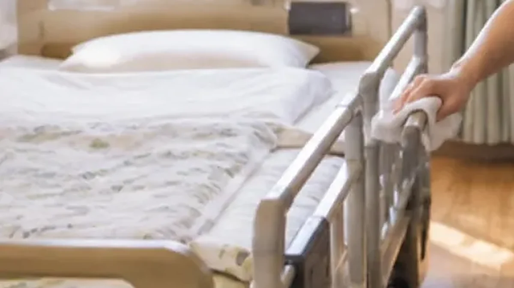

床の洗浄とワックス、扉・手すり・スイッチまわりの手あか、窓とサッシまで。
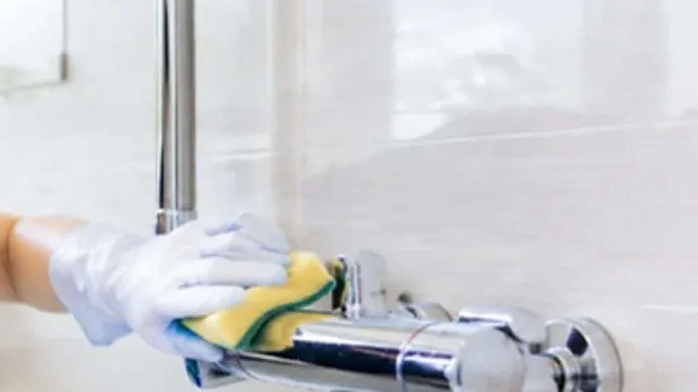
洗面台の水あかやくすみを落とし、手がふれる所をていねいに拭き上げます。
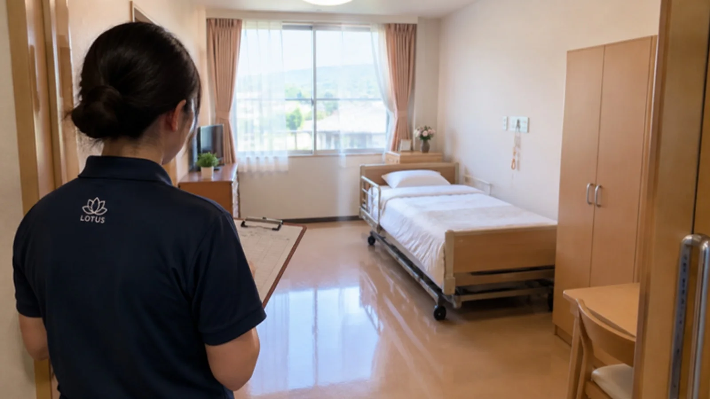
においが気になる居室には、消臭・抗菌の光触媒コーティングを追加できます。最後に写真で報告。
見学や入居の日に目に入るのは、まず居室。床と水まわりの清潔さが、施設への安心につながります。
退去後の片づけと清掃を職員さんだけで抱えなくていいように。床のワックスなど、道具が要る作業をまかせてください。
退去の連絡をいただいたら、下見か写真で内容を決めて日程を組みます。エアコン洗浄も同じ日にまとめられます。
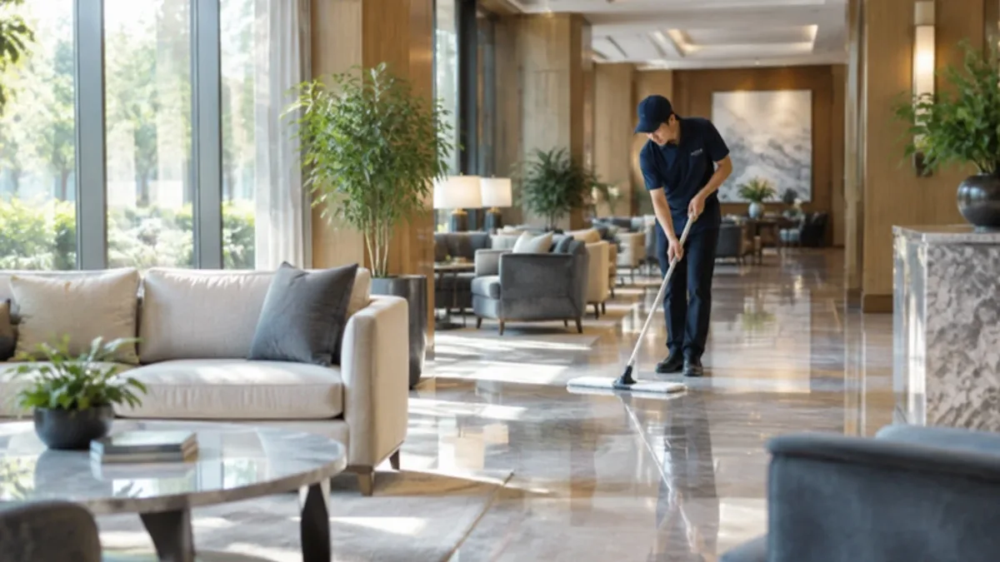
03 / COMMON AREA
約 40 坪 ・ 2 名 × 4 時間
約 78,000 円(税込)
食堂・廊下・談話室の床と、共用トイレ等をまとめて清掃する目安です。広さ・床材・汚れの状態で前後するため、下見か写真で確定します。食事や入浴の時間を外し、通行できる経路を残しながら区画ごとに進めます。
04 / PRICE
正式な金額は、下見または写真でお見積りします。
| 居室 20㎡以下 | 20,000 円(税別) | 浴室・トイレ付きは別途相談 |
|---|---|---|
| 居室 21㎡以上 | 30,000〜40,000 円(税別) | 間取り・状態で前後します |
| 共用部の床・トイレ等 | 約 78,000 円(税込) | 約 40 坪・2 名×4 時間の目安 |
| 業務用エアコン | 1 台 35,000 円(税別) | 複数台はまとめ割(内容は相談時に) |
| 光触媒コーティング | 1 式 7,000 円〜 / 1㎡ 1,000 円(税別) | 施設まるごとは 59,800 円〜 |
| 害虫駆除機 | 1 台 4,290 円 / 4 週間(税別) | 厨房・配膳室など |
| 定期清掃 | 25,000 円〜(税別) | 頻度と範囲でお見積り |
ご依頼の流れ
フォームから、施設の種類・場所・お部屋の広さを。写真があれば一緒にどうぞ。
写真でのお見積りは無料です。下見が必要な場合も、事前にお伝えします。
食事・入浴・お昼寝の時間を外して、工程を組みます。
区域ごとに道具を分け、音とにおいに配慮して進めます。
作業前後の写真と、気づいたことをお渡しします。
よくある質問
退去のご予定がわかった時点で、ご連絡ください。日程は施設のご予定をうかがって調整します。
共用部は、食事・入浴・お昼寝の時間を外して区画ごとに進めます。居室の清掃は、基本的に空室で行います。在室中のお部屋は、職員さんとご相談のうえで決めます。
写真でのお見積りは無料です。下見が必要な場合も、事前にお伝えします。
共用部パック(約 78,000 円)は税込、それ以外のメニューは税別です。正式な金額は、お見積りに明記します。
作業前後の写真と、気づいたこと(破損・におい・カビなど)を、職員さんの手間なく受け取れる形でご報告します。
東京都・神奈川県です。
LOTUS CLEAN CARE / 介護施設・福祉施設専門
私たちは、介護施設・福祉施設の清掃を軸に取り組んできました。食事、入浴、レクリエーション、面会。施設の一日の流れを知っているから、入居者さんの生活を止めずに、音を立てず、においを残さずに、きれいにできます。高級有料老人ホームのラウンジから、地域の特別養護老人ホームの食堂まで。
掃除は、場所を整えることで、そこで暮らす人の一日を整えること。
「作務(さむ)」と呼ばれる、掃除をおろそかにしない心構えを大切にしています。
道具は元の場所へ。音は立てない。終わったら、人に報告する。
どの施設でも
介護・福祉施設の清掃は、どこも「生活を止めずに、きれいにする」が前提です。施設の種類が変わっても、時間の外し方・道具の分け方・報告の仕方は同じ。だから、はじめての施設でも安心して任せていただけます。
WHY CLEAN
介護施設の清掃は、見た目のためだけではありません。入居者さん、職員さん、ご家族。施設にかかわるみんなの毎日が変わります。
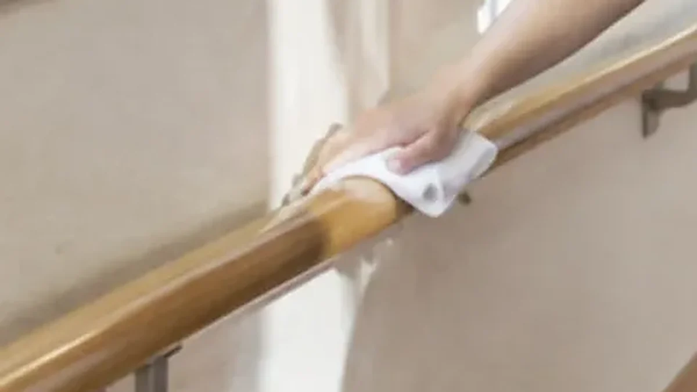
01すべりやすい浴室の床、手すり、ドアノブ。転びやすい場所と、手がふれる場所から整えます。
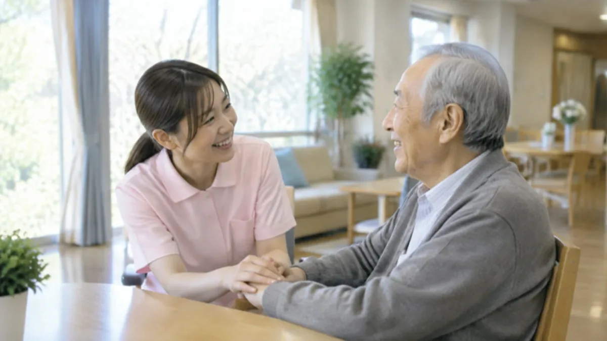
02床のワックスやエアコン洗浄は、専門の道具と時間が要る仕事。まかせてもらえれば、職員さんは入居者さんとの時間に集中できます。
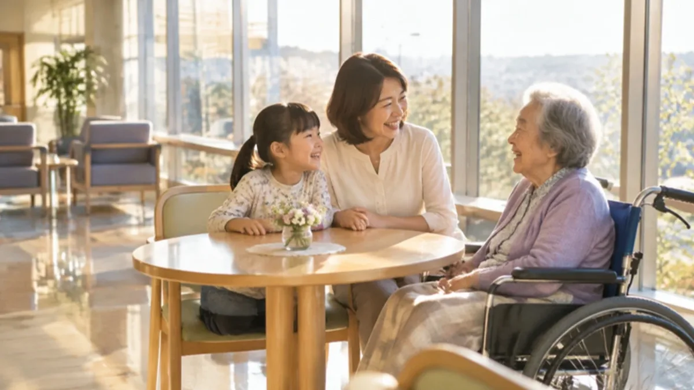
03面会の日、見学の日。きれいな床と、においのない空気は、言葉より先に施設の姿勢を伝えます。
05 / FOR CARE FACILITIES
食事・入浴・レクリエーション・お昼寝の時間を避けて工程を組みます。
ポリッシャーの音や薬剤の匂いは、使う場所と時間を事前にお知らせし、職員と相談して決めます。
洗浄中の区画は表示で区切り、乾くまでの時間と通行を再開する人を決めてから進めます。
居室・トイレ・厨房など、区域ごとに道具の使い分けを事前に決め、施設の衛生ルールに合わせます。
入居者の持ち物は動かす前に確認し、置き場所は元どおりに。分からない物は触らず職員へ。
作業前後の写真と、気づいたこと(破損・におい・カビなど)を職員の手間なく受け取れる形で報告します。
06 / PLANS
まずは居室だけ、慣れたら共用部も、最後は施設まるごと。施設の予定と予算に合わせて組み替えられます。金額はお見積りで明記します。
退去のたびに、1 部屋から。床・建具・窓・水まわりを整えて、次の入居に備えます。
退去ごとの居室清掃に、食堂・廊下・談話室の床と共用トイレの定期清掃を組み合わせて。
居室と共用部に、エアコン洗浄、厨房の害虫駆除機(4 週間ごと)、光触媒コーティングを組み合わせて。
06 / BEFORE YOU CALL
READ
作業の順番と理由を、短い読みものにしています。1 本 5〜6 分。
退去のご予定や、気になっている場所の写真を送ってください。写真でのお見積りは無料です。